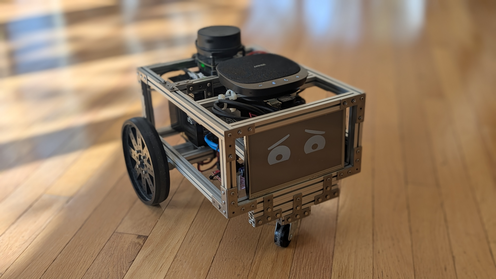
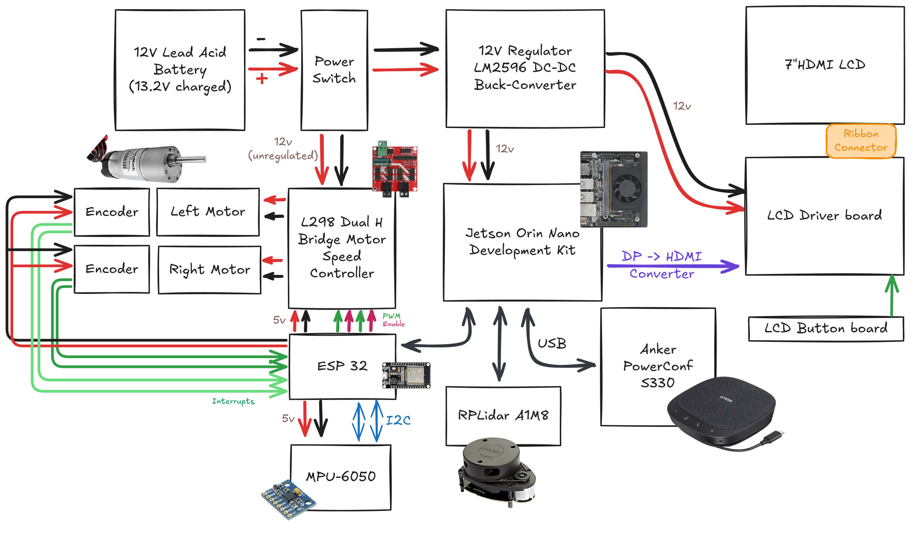
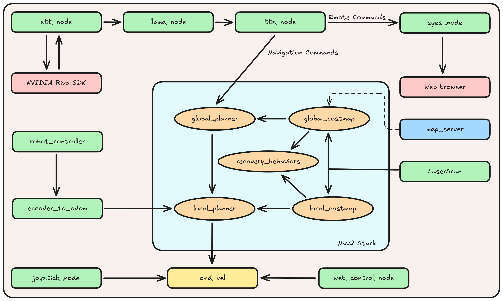

Gabriel West · Computer Engineering, University of Illinois Urbana-Champaign · gwest9@illinois.edu · github.com/gw12343
Autonomous ROS2 Robot

An autonomous differential-drive ROS2 Humble robot that incorporates LiDAR SLAM, encoder odometry, and Nav2 planning with a conversational voice stack (Riva STT → Llama 3 LLM→ Riva TTS) and an expressive on-screen face. The robot holds spoken conversations, with the LLM replying to your statements and questions. However, if it infers you wish it to perform a known action (navigation, emotion change), it issues a matching system command instead of a spoken reply. Everyday wording is enough, you do not have to use keywords or name the skill.
System Demonstrations
Navigation and Command Demo
Spoken “go do the dishes” is understood, then refused: the robot has no action for chores. “Go to the kitchen” matches a known navigation skill. Kitchen is a stored pose on a map built earlier. Nav2’s global planner produces a path to those coordinates, and the local planner follows it while steering around obstacles. Riva transcribes the speech, Llama 3 chooses the reply, and a ROS node starts that navigation when the reply is a command.
Emotion Demo
The robot has an emotion system of different emotional states ['NEUTRAL', 'HAPPY', 'SAD', 'SURPRISED', 'INQUISITIVE', 'DETERMINED'], each associated with a distinct on-screen expression. The state is controlled through emotion-state commands issued by Llama 3. There is no keyword recognition, instead Llama 3 is prompted to issue emotion state change commands based on the flow of conversation. In this clip, Llama 3 decided when hearing “I want you to really try your hardest” to initiate a change to the “determined” emotional state.
SLAM Demo
Real-time SLAM mapping demonstration in RViz showing map construction as the robot explores the environment. Controller input visible in bottom left shows manual teleoperation while the robot builds an accurate occupancy grid map using LIDAR data and odometry fusion.
System Architecture
The project integrates five major subsystems:
- Navigation Stack: ROS2 Nav2 with LIDAR-based mapping and localization
- AI Integration: Llama3 LLM with voice input/output via NVIDIA Riva
- Visual Interface: Expressive eye display with emotional states
- Motor Control: Dual motor drive system with encoder feedback
- Sensor Fusion: LIDAR and encoder integration for precise positioning
The Jetson Orin Nano runs ROS2 Humble. An RPLiDAR A1 on USB publishes LaserScan into Nav2’s costmaps. Wheel encoders on the ESP32 are converted to odometry so the robot knows how far it has driven. Mapping and going to a named place are separate steps. In the SLAM clip, the robot is teleoperated while LiDAR scans and odometry build an occupancy grid; that grid is saved as a map. Later, a name like kitchen is a stored pose on that already-built map. Nav2 loads the saved map, and the global planner produces a path to those coordinates, which is what happens in the kitchen clip.
Spoken audio is transcribed by NVIDIA Riva, the transcript is sent to Llama 3, and Llama 3’s reply goes to a text-to-speech node. Known-skill intent comes back as XML such as <COMMAND> navigate kitchen </COMMAND>. If the text received by the TTS node is parsed as a command, TTS initiates the command on the appropriate node (/global_planner, /eyes_node), otherwise text is directly synthesized to speech. Eyes are a browser page on the 7″ HDMI panel.
Hardware Architecture
The complete electronics system can be seen here:

ROS2 Node Architecture

Topics:
/cmd_vel # Velocity commands to motors
/scan # LIDAR data
/odom # Odometry feedback
/voice_in # Speech-to-text output
/llama_out # LLAMA3 output
/tts_out # Text-to-speech input
/robot_state # Emotional state commands
/navigation_status # Current navigation state
The diagram is the map. Voice: STT node, Riva, Llama 3, TTS node, which forks to Nav2 and to the eyes. Nav2 takes LaserScan, a saved map, and encoder odometry. Recovery sits between the planners and the costmaps.
Real-time Performance:
Motor control loops at 100Hz
Navigation updates at 20Hz
Voice processing with <750ms latency
Built with: ROS2 Humble, NVIDIA Jetson Orin Nano, RPLiDAR, Llama3, NVIDIA Riva, ESP32